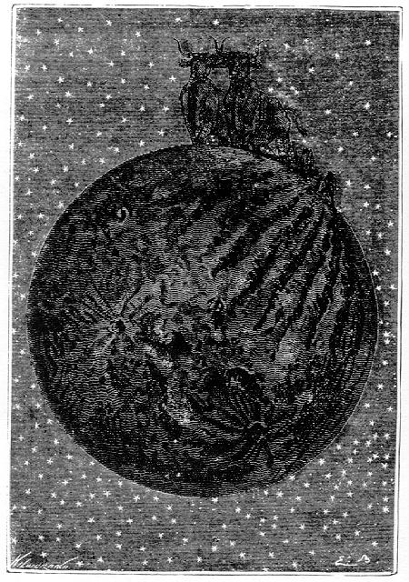
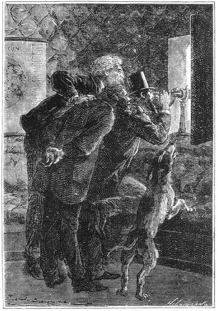

Capítol XIII
PAISATGES LUNARS
A les dues i trenta minuts
de la matinada, la bala es trobava a través del trentè paral·lel
lunar i a una distància efectiva de mil quilòmetres, reduïda,
però, a deu, mercès als instruments d'òptica. Continuava
essent impossible que no pogués arribar a atènyer un punt qualsevol
del disc. La seva velocitat de translació, relativament mediocre, era
inexplicable per al president Barbicane. A aquella distància de la Lluna,
havia d'ésser considerable per a mantenir-la contra la força d'atracció.
Hi havia allí, doncs, un fenomen del qual l'explicació s'escapava
també. A més, no hi havia temps per a cercar-ne la causa. El relleu
lunar desfilava sota els ulls dels viatgers, i ells no en volien perdre ni un
sol detall.
El disc apareixia, amb les ulleres de llarga vista, a una distància de
dues llegües i mitja.1 Un aeronauta, transportat a
aquella distància de la Terra, ¿què hi distingiria de la
seva superfície? Hom no sabria dir-ho, car les més altes ascensions
no han passat dels vuit mil metres.2
Heus aquí, però, una exacta descripció del que veien, des
d'aquella alçària, Barbicane i els seus companys.
Coloracions bastant variades com extenses làmines damunt el disc. Els
selenògrafs no s'han posat d'acord respecte a la natura d'aquestes coloracions.
Són diferents i força ben definides. Julius Schmidt pretén
que, si els oceans terrestres estiguessin en sec, un observador selenita no
distingiria sobre el globus, entre els oceans i les planúries continentals,
matisos tan diversament acusats com els que es mostren a la Lluna per a un observador
de la Terra. Segons ell, el color comú de les vastes planúries
conegudes amb el nom de "mars" és el gris fosc barrejat de
verd i de bru. Alguns grans cràters presenten també aquesta coloració.

...quins bous més gegantins
Barbicane coneixia aquesta opinió del selenògraf alemany, opinió
compartida per Beer i Moedler. Va comprovar que l'observació llur donava
la raó en contra del parer de certs astrònoms que només
admeten la coloració grisa a la superfície de la Lluna. En certs
espais, el color verd es destacava fortament, tal com es presenta, segons el
dir de Julius Schmidt, en els Mars de la Serenitat i dels Humors. Barbicane
va observar igualment amples cràters desproveïts de cons interiors,
que presentaven un color blavenc anàleg als reflexos d'una xapa d'acer
polida de fresc. Aquestes coloracions pertanyien realment al disc lunar, i no
eren pas resultat, segons el parer d'alguns astrònoms, de la imperfecció
de l'objectiu de les ulleres o bé de la interposició de l'atmosfera
terrestre. Per Barbicane, no hi havia cap dubte referent a aquest punt. Observava
a través del buit i no podia incórrer en cap error d'òptica.
Considerà el fet de les coloracions diverses com a conquesta per a la
ciència. Ara bé, aquells matisos de verd, ¿eren deguts
a una vegetació tropical, mantinguda per una atmosfera densa i baixa?
Això, ell encara no ho podia dir.
Més cap al lluny, va remarcar un tint rogenc, molt fortament acusat.
Semblant matís ja havia estat observat al fons d'un recinte isolat, conegut
pel circ de Lichtenberg, i que es troba situat prop dels monts Hercinians, al
contorn de la Lluna, però no en pogué reconèixer la natura.
No fou pas més sortós a propòsit d'una altra particularitat
del disc, car no en pogué precisar exactament la causa. Vet aquí
aquella particularitat.
Miquel Ardan estava en observació prop del president, quan va remarcar
unes llargues línies blanques, fortament il·luminades pels raigs
directes del Sol. Eren un seguit de solcs lluminosos molt diferents de la resplendor
que no feia gaire Copèrnic presentava. Aquests s'allargaven paral·lelament
els uns amb els altres.
Miquel, amb el seu habitual aplom, no es pogué estar de dir:
-Guaiteu, camps cultivats!
-Camps cultivats? - respongué Nicholl, aixecant les espatlles.
-O almenys llaurats - va replicar Miquel Ardan -. Però quins llauradors
aquests selenites, i quins bous més gegantins no deuen haver junyit a
llur arada per cavar tals solcs!
-No són pas solcs - digué Barbicane -; són ranures.
-Doncs ranures - respongué dòcilment Miquel -. Ara bé:
què s'entén per ranures en el món científic?
Barbicane explicà de seguida al seu company el que ell sabia de les ranures
lunars. Sabia que eren uns solcs observats sobre totes les parts no muntanyoses
del disc; que aquests solcs, aïllats molt sovint, mesuren de 4 a 50 llegües
de llargada;3 que llur amplària va de mil a mil
cinc-cents metres i que llurs voreres són rigorosament paral·leles;
però res no se sabia sobre llur formació ni sobre llur natura.
Barbicane, amb la seva ullera de llarga vista, va observar aquelles ranures
amb una extema atenció. Va remarcar que llurs voreres estaven formades
de pendissos extremament drets. Eren llargues muralles paral·leles, i
amb alguna imaginació hom podia admetre l'existència de llargues
línies de fortificacions aixecades pels enginyers selenites.
D'aquestes diverses ranures les unes eren absolutament dretes i com tirades
amb la plomada. D'altres presentaven una lleugera curvatura tot mantenint el
paral·lelisme de llurs vores. Aquestes d'aquí s'encreuaven; aquelles
d'allí tallaven els cràters. Ací, solcaven cavitats ordinàries,
tals com Posidoni o Petavius; allí ratllaven els mars, tals com el Mar
de la Serenitat.
Aquests accidents naturals degueren necessàriament avivar la imaginació
dels astrònoms terrestres. En les primeres observacions no les havien
desobertes, aquestes ranures. Hevelius, Cassini, La Hire i Herschell semblen
no haver-les conegudes. És Schroeter qui, el 1789, les assenyala per
primera vegada a l'atenció dels savis, i altres en seguiren que les estudiaren,
tals com Pastorff, Gruithuysen, Beer i Moedler. Avui, llur nombre arriba fins
a setanta.4 Però, si hom les ha comptades, no n'ha
pogut encara precisar la natura. Ben cert que no són pas fortificacions,
ni tampoc antics llits de rius assecats, car, d'una banda, les aigües,
tan lleugeres a la superfície de la Lluna, no haurien pogut cavar tals
rases,5 i, de l'altra, aquells solcs travessen sovint cràters
situats a una gran alçària.
Tot i això, cal dir que Miquel Ardan tingué una idea i que, sense
saber-ho, va retrobar-se en aquesta circumstància amb Julius Schmidt.
-¿Per què - digué ell - aquestes inexplicables aparences
no podrien ésser simplement fenòmens de vegetació?
-Com ho entens tu, això? - demanà vivament Barbicane.
-No t'enfadis, mon digne president - respongué Miquel -. Però,
¿no podria ésser que aquestes línies fosques que formen
l'espatlló fossin rengleres d'arbres disposats regularment?
-Estàs obstinat que sigui vegetació, doncs?
-Jo vinc - respongué Miquel Ardan - a explicar allò que vosaltres,
els savis, no expliqueu. Almenys, la meva hipòtesi tindria l'avantatge
d'indicar per què aquestes ranures desapareixen o semblen desaparèixer
en èpoques determinades.
-I per quina raó?

Ell no distingia...
-Per la raó que aquests arbres esdevenen invisibles quan perden llurs
fulles i visibles quan tornen a tenir-ne.
-La teva explicació és enginyosa, estimat amic meu - respongué
Barbicane -, però és inadmissible.
-Per què?
-Perquè no hi ha, per dir-ho així, cap estació a la superfície
de la Lluna i, per consegüent, els fenòmens de vegetació
dels quals tu ens parles no es poden produir.
En efecte, la poca obliqüitat de l'eix lunar6 manté
el Sol a una alçària gairebé constant a cada latitud. Damunt
de les regions equatorials, l'astre resplendent ocupa gairebé invariablement
el zenit, i no s'excedeix gaire del límit de l'horitzó a les regions
polars. Car, segons cada regió, hi ha un hivern, una primavera, un estiu
o una tardor perpètues, de la mateixa manera que al planeta Júpiter,
en què l'eix està igualment poc inclinat sobre la seva òrbita.
Quin origen tenen aquestes ranures? Qüestió difícil de resoldre
és aquesta. Són, certament, posteriors a la formació dels
cràters i dels circs, car moltes d'elles s'hi han introduït esberlant
llurs muralles circulars. Pot ésser, doncs, que, contemporànies
de les darreres èpoques geològiques, siguin degudes només
que a l'expansió de les forces naturals.
Tot i això, el projectil havia assolit l'alçària del 40°
de latitud lunar, i a una distància que no devia excedir de vuit-cents
quilòmetres. Els; objectes apareixien en el camp de les ulleres com si
estiguessin collocats a dues llegües solament.7 En
aquell punt, sota llurs peus, s'enlairava Helicó (21 quilòmetres
de diàmetre) amb els seus cinc-cents cinc metres d'altitud, i a l'esquerra
es dibuixaven arrodonides aquestes mediocres altituds que enclouen una petita
porció del Mar de les Pluges conegut amb el nom de Golf dels Iris.
L'atmosfera terrestre hauria d'ésser cent setanta vegades més
transparent que no és per a permetre als astrònoms de fer les
observacions completes a la superfície de la Lluna. Però, en aquell
buit on flotava el projectil, cap fluid no s'interposava entre l'ull de l'observador
i l'objecte observat. A més, Barbicane es trobava endut a una distància
on no havien arribat mai els més potents telescopis, ni el de John Ross,
ni tampoc el de les Muntanyes Roqueres. Es trobava, per tant, en unes condicions
extremament favorables per a resoldre aquella gran qüestió de l'habitabilitat
de la Lluna. Així i tot, però, aquesta solució se li escapava
encara. Ell no distingia altra cosa que el llit desert d'immenses planúries
i, vers el Nord, àrides muntanyes. Cap obra no traïa la mà
de l'home. Cap ruïna no atestava el seu pas. Cap aglomeració d'animals
no indicava que la vida s'hi desenvolupés àdhuc en un grau inferior.
Enlloc cap moviment, en cap banda una aparença de vegetació. Dels
tres regnes que es parteixen l'esferoide terrestre, un només estava representat
en el globus lunar: el regne mineral.
-Ah! - digué Miquel Ardan amb un aire quelcom desconcertat -, de manera
que no hi ha ningú?
-No pas per ara - respongué Nicholl -. No hi ha cap home, cap animal
ni cap arbre. Després de tot, si l'atmosfera s'ha arrecerat al fons de
les cavitats, a l'interior dels circs, o àdhuc a la cara oposada de la
Lluna, res no podem prejutjar.
-I a més - afegí Barbicane -, àdhuc per a la vista més
penetrant, un home no és visible a una distància superior a set
quilòmetres. Doncs, si hi ha selenites, ells poden veure el nostre projectil,
i, en canvi, nosaltres no els podem veure.
Cap a les quatre de la matinada, a l'altitud del 50° paral·lel, la
distància s'havia reduït a sis-cents quilòmetres. A l'esquerra
s'entreveia una línia de muntanyes capriciosament contornejades i dibuixades
en plena llum. Cap a la dreta, al contrari, s'obria un forat negre com la boca
d'un gran pou, insondable i ombrívol, foradat en el sòl de la
Lluna.
Aquest forat era el Llac Negre, era Plató, circ pregon que hom pot convenientment
estudiar de la Terra estant, entre el darrer quart i la Lluna nova, quan les
ombres es projecten de l'Oest a l'Est.
Aquella coloració negra rarament es troba a la superfície del
satèl·lit. Hom l'ha reconeguda tan sols en les profunditats del
circ d'Endimió, a l'Est del Mar del Fred, a l'hemisferi Nord i al fons
del circ de Grimaldi, en l'equador i vers el contorn oriental de l'astre.
Plató és una muntanya anular situada als 51° de latitud Nord
i 9° de longitud Est.8 El seu circ té una llargària
de noranta-sis quilòmetres i mig i seixanta-un d'ample. A Barbicane li
dolgué de no poder passar perpendicularment per damunt del seu vast esvoranc.
Hi havia allí un abisme a sondejar, potser algun misteriós fenomen
a sorprendre. Però la marxa del projectil no podia ésser modificada.
Calia acceptar-la. Si hom no dirigeix els globus, encara molt menys les bales
de canó, i sobretot quan hom s'hi troba reclòs entre llurs parets.
Vers les cinc del matí, el límit septentrional del Mar de les
Pluges restava per fi passat. Les muntanyes La Condamine i Fontenelle quedaven
l'una a l'esquerra i l'altra a la dreta. Aquella part del disc, a partir del
seixantè grau, esdevenia absolutament muntanyosa. Les ulleres de llarga
vista l'apropaven a una llegua de distància,9 distància
inferior a la que separa el cim del Mont Blanc del nivell del mar.
Tota aquella regió estava eriçada de pics i de circs. Vers els
70° dominava Filolaus, a una alçària de quatre mil metres,
obrint un cràter el·líptic duna longitud de 19 llegües
per 4 d'amplada.10
Aleshores, el disc, vist des d'aquella distància, oferia un aspecte extremament
pintoresc. Els paisatges es presentaven a l'esguard en unes condicions ben distintes
dels de la Terra, però força inferiors també.
No tenint atmosfera la Lluna, l'absència d'aquest embolcall gasós
té les conseqüències ja demostrades. Cap crepuscle a la seva
superfície; la nit segueix al dia i el dia segueix a la nit amb la brusquedat
d'un llum que s'apaga o s'encén al mig d'una foscor profunda. Cap transició
del fred a la calor; la temperatura passa en un instant del grau de l'aigua
bullenta al grau dels freds de l'espai.
Una altra conseqüència de la manca d'aire és aquesta: que
les tenebres absolutes regnen allí on no arriben els raigs del Sol. El
que a la Terra s'anomena la llum difusa, aquesta matèria lluminosa que
l'aire té en suspensió i que ha creat els crepuscles i les albes,
que produeix les ombres, les penombres i tota aquesta màgia del clarobscur,
no existeix pas a la Lluna. D'aquí una brutalitat de contrastos que només
admet dos colors, el negre i el blanc. Per més que un selenita protegeixi
els seus ulls contra els raigs solars, el cel se li apareix absolutament negre
i les estrelles brillen a les seves mirades com en les nits més fosques.
Que hom jutgi la impressió que produiria aquest estrany aspecte a Barbicane
i als seus dos amics. Llurs ulls estaven rebentats. No copsaven prou la distància
respectiva dels diversos plànols. Un paisatge lunar que no s'endolceix
gens amb el fenomen del clarobscur no hauria pogut ésser plasmat per
un paisatgista de la Terra. Taques de tinta damunt un full blanc de paper, això
hauria estat tot.
Aquest aspecte no va modificar-se gens, àdhuc quan el projectil, a latitud
del 800, només estava separat de la lluna una distància de 100
quilòmetres. Ni tampoc quan, a les cinc del matí, va passar a
menys de 50 quilòmetres de la muntanya de Gioja, distància que
els aparells òptics reduïen a mig quart de llegua.11
Semblava que la Lluna pogués ésser tocada amb la mà. I
semblava impossible que la bala no hi ensopegués poc abans, sols fos
al Pol Nord, del qual l'aresta brillant es dibuixava violentament sobre el fons
negre del cel. Miquel Ardan volia obrir una de les lluernes i precipitar-se
devers la superfície lunar. Una caiguda de dotze llegües!12
Tant li feia! Temptativa inútil tanmateix, car, si el projectil no havia
d'atènyer un punt qualsevol del satèllit, Miquel, endut en el
seu moviment, no l'hauria tampoc assolit.
En aquell moment, a les sis, apareixia el pol lunar.
El disc no oferia res més als ulls dels viatgers que una meitat fortament
il·luminada, mentre que l'altra desapareixia en les tenebres. Sobtadament,
el projectil s'endinsà en la línia de demarcació entre
la llum intensa i l'ombra absoluta, i de seguida fou engolit en una nit profunda.
1. 10 quilòmetres.
2. Probablement, Juli Verne es refereix a l'ascensió
científica del seu compatriota Biot, que el 1804 va arribar als 7.000
metres, o potser també evocant l'ascensió del 1862, duta a terme
per a observacions meteorològiques per l'astrònom anglès
Glaisher, que en arribar als 8.838 metres caigué esvanit al fons de la
cistella mentre que el seu company, Coxwell, aconseguia fer pujar l'aeròstat
als 11.000 metres.
Fins avui, però, l'ascensió més enlairada que hom coneix
i amb un globus lliure, és la dels oficials nord-americans. Victor Prather
i Malcolm Ross, en assolir, el 4 de maig del 1961, 34.594 metres.
En canvi, amb un avió, l'avió-coet "X-15, s'ha arribat a
atènyer vora 105 quilòmetres d'altura. (N. del T.)
3. De setze a dos-cents quilòmetres. Així
i tot, moltes s'allarguen a majors distàncies, i n'hi ha un grup que
ateny àdhuc 1.600 quilòmetres de longitud. (N. del T.)
4. D'aquesta xifra, actualment se'n compten alguns centenars.
En 1866, Schmidt en féu una llista que arribaven a 425. (N. del T.)
5. Excavacions llargues i estretes. El doctor Eduard Fontserè
anomena les ranures o esquerdes lunars amb un nom mol peculiar a Catalunya i
força adequat per la seva característica geològica: Falles.
Falles, doncs, no són més que uns penya-segats que s'han produït
per l'enfonsament parcial d'un terreny. (N. del T.)
6. La inclinació de la Lluna respecte al plànol
de la seva òrbita es de 6º 40' (valor mitjà). (N. del T.)
7. Vuit quilòmetres.
8. Altitud de les seves muralles: 2.470 metres. (N. del
T.)
9. Quatre quilòmetres.
10. Quilòmetres 76 per 16.
11. 500 metres.
12. 48 quilòmetres.